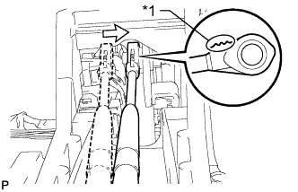

РЫЧАГ ПЕРЕКЛЮЧЕНИЯ ПЕРЕДАЧ > УСТАНОВКА |
| 1. УСТАНОВИТЕ НАПОЛЬНЫЙ МЕХАНИЗМ ПЕРЕКЛЮЧЕНИЯ ПЕРЕДАЧ В СБОРЕ |
Установите напольный механизм переключения передач и закрепите его 4 болтами. Равномерно затяните болты.
Подсоедините разъем.
| 2. ПОДСОЕДИНИТЕ ТРОС МЕХАНИЗМА ПЕРЕКЛЮЧЕНИЯ ПЕРЕДАЧ В СБОРЕ |
 |
Подсоедините трос механизма переключения передач к держателю рычага переключения передач и установите новый фиксатор.
|  |
Подсоедините наконечник троса к рычагу переключения передач.
| *1 | С уступом |
| 3. ОТРЕГУЛИРУЙТЕ ПОЛОЖЕНИЕ РЫЧАГА ПЕРЕКЛЮЧЕНИЯ ПЕРЕДАЧ |
Снимите задний вещевой ящик в облицовке туннеля пола (Нажмите здесь).
Для моделей с холодильной камерой:
Снимите задний вещевой ящик в облицовке туннеля пола (Нажмите здесь).
Установите рычаг переключения передач в положение N.
 |
Ослабьте гайку на наконечнике троса.
Немного протолкните трос переключения в направлении задней стороны автомобиля и затяните гайку.
Переведите рычаг переключения передач и убедитесь, что при перемещении рычага переключения передач из положения N в положение D возникает меньше дрожания, чем при перемещении рычага в положение P.
Установите задний вещевой ящик в облицовке туннеля пола (Нажмите здесь).
Для моделей с холодильной камерой:
Установите задний вещевой ящик в облицовке туннеля пола (Нажмите здесь).
| 4. ПРОВЕРЬТЕ ПОЛОЖЕНИЕ РЫЧАГА ПЕРЕКЛЮЧЕНИЯ ПЕРЕДАЧ |
Переведя рычаг переключения передач из положения P в положение R при включенном зажигании и нажатой педали тормоза, убедитесь, что он перемещается плавно и фиксируется в требуемом положении.
Удостоверьтесь, что рычаг переключения передач не останавливается при перемещении из положения R в положение P, и не заедает при перемещении из положения D в положение L.
Запустите двигатель и убедитесь, что автомобиль начинает двигаться вперед после перемещения рычага переключения передач из положения N в положение D и назад после установки рычага в положение R.
Если результат проверки не удовлетворяет требованиям, проверьте датчик положения паркинга/нейтрали в сборе и монтаж напольного механизма переключения передач в сборе.
Если индикатор не соответствует положению рычага переключения передач, выполните следующие процедуры регулировки.
| 5. УСТАНОВИТЕ ЗАДНИЙ ВЕЩЕВОЙ ЯЩИК В ОБЛИЦОВКЕ ТУННЕЛЯ ПОЛА В СБОРЕ |
Установите задний вещевой ящик в облицовке туннеля пола (Нажмите здесь).
Для моделей с холодильной камерой:
Установите задний вещевой ящик в облицовке туннеля пола (Нажмите здесь).